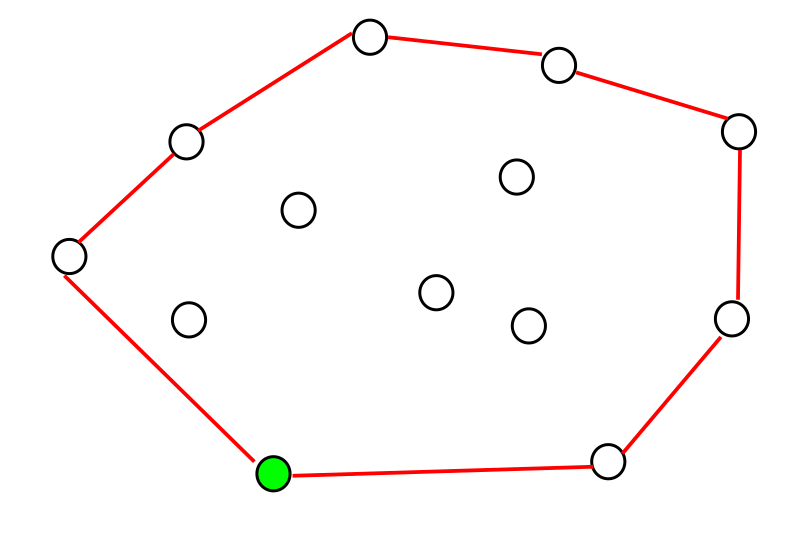
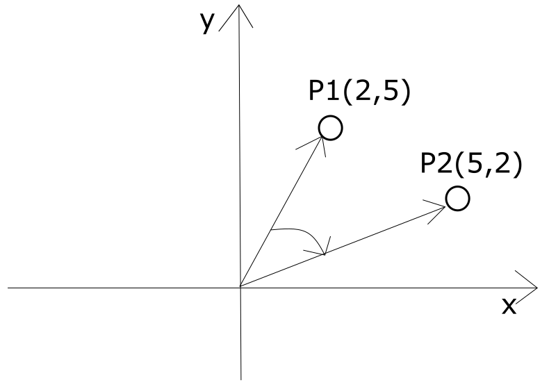
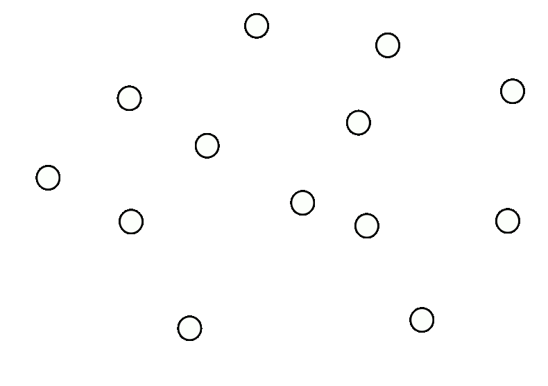
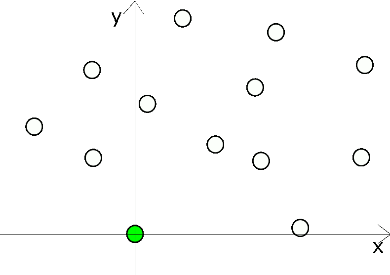
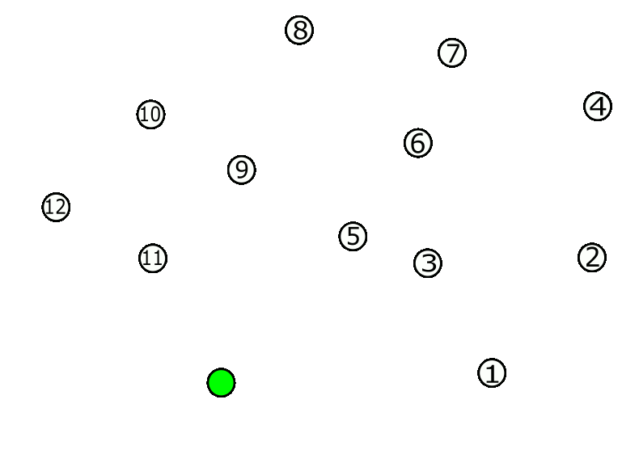
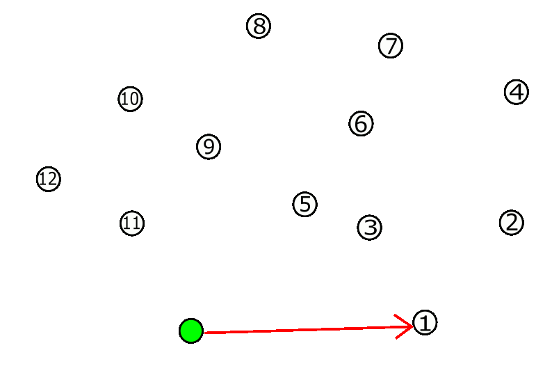

Wprowadzenie
Mamy pewien zbiór punktów na płaszczyźnie. Celem algorytmu Grahama jest znalezienie powłoki wypukłej - czyli takiego minimalnego
zbioru punktów, który okala wszystkie inne punkty znajdujące się w danym zbiorze.
Pomysłodawcą samego algorytmu jest Ronald Graham.
Podaje się, że złożoność obliczenia tego algorytmu wynosi O(nlogn), gdzie n - liczba punktów w zbiorze.
Przykład wyniku działania algorytmu jest widoczny na poniższym obrazku.

Uwaga!
Sam algorytm Grahama nie ma wariantów dla przestrzeni o wyższych wymiarach. Jednakże, są inne algorytmy, np. algorytm Jarvisa,
który już takie warianty ma. Algorytm Jarvisa nie jest poruszony w tej aplikacji.
Mechanizm działania
W tym rozdziale wytłumaczymy dokładnie, krok po kroku, jak ten algorytm działa.
Spis treści (kliknij, by nie scrollować ;]):
Założenia początkowe
- Każdy punkt jest reprezentowany przez wspołrzędne (x,y)
- Startujemy od punktu, który leży najniżej (jeśli jest więcej takich punktów, to bierzemy lewy skrajny)
- Idziemy od punktu startowego w kierunku przeciwnym do ruchu wskazówek zegara
-
Do określenia czy punkt P1 leży na prawo (w sensie kątowym) od punktu P2 stosujemy iloczyn wektorowy.
Punkty P1,P2 traktujemy jako wektory, których początek jest zaczepiony w początku układu współrzędnych.
Następnie korzystamy z poniższego wyrażenia:
y1x2-y2x1
i sprawdzamy znak.
Jeśli >0, to P1 leży na lewo (w sensie kątowym/przeciwnie do ruchu wskazówek zegara) od P2.
Inaczej: kąt od P1 do P2 jest "dodatni"
Jeśli <0, to P1 leży na prawo (w sensie kątowym/zgodnie do ruchu wskazówek zegara) od P2.
Inaczej: kąt od P1 do P2 jest "ujemny"
Przykład:

Korzystając ze wzoru otrzymujemy:
5*5-2*2 = 25-4 = 21 >0 czyli P1 leży na lewo od P2
Korzystając ze wzoru otrzymujemy:
2*2-5*5 = 4-25 = -21 <0 czyli P1 leży na prawo od P2
-
Sam algorytm powinien zwrócić indeksy punktów, które tworzą powłokę wypukłą
(od punktu startowego, w kolejnosci przeciwnej do ruchu wskazówek zegara).
Lista kroków w algorytmie
- Znajdź punkt startowy (skrajny lewy z najniższych punktów). Potraktuj go jako nowy środek układu współrzędnych
- Posortuj pozostałe punkty rosnąco według ich kąta względem wektora (1,0).
-
Do powłoki wypukłej dodaj indeks punktu początkowego (nowy środek układu współrzędnych) oraz
pierwszego punktu z posortowanego porządku.
-
Przebiegaj pozostałe punkty w posortowanym porzadku (poczynając od drugiego):
- Dodaj indeks aktualnego punktu do powłoki wypukłej.
-
Dopóki dwa wektory wyznaczone przez trzy ostatnie punkty leżące na aktualnej powłoce wy-
pukłej tworzą „zakręt w prawo” (tzn. wektor ostatni „skręca w prawo” względem wektora
przedostatniego):
- Usuń indeks przedostatniego punktu z aktualnej powłoki wypukłej.
- Zwróć powłokę wypukłą.
Analiza działania na przykładzie
Krok 1. Znajdź punkt startowy (skrajny lewy z najniższych punktów). Potraktuj go jako nowy środek układu współrzędnych

Krok 2. Posortuj pozostałe punkty rosnąco według ich kąta względem wektora (1,0).

Krok 3. Do powłoki wypukłej dodaj indeks punktu początkowego (nowy środek układu współrzędnych) oraz
pierwszego punktu z posortowanego porządku.

Krok 4. Przebiegaj pozostałe punkty w posortowanym porzadku (poczynając od drugiego):
- Dodaj indeks aktualnego punktu do powłoki wypukłej.
-
Dopóki dwa wektory wyznaczone przez trzy ostatnie punkty leżące na aktualnej powłoce wypukłej
tworzą „zakręt w prawo” (tzn. wektor ostatni „skręca w prawo” względem wektora przedostatniego):
- Usuń indeks przedostatniego punktu z aktualnej powłoki wypukłej.

Krok 5. Zwróć powłokę wypukłą.
Zwracamy indeksy początkowe punktów, które wchodzą w skład powłoki.
Powrót do góry
Na podstawie konspektu autorstwa profesora Klęska.